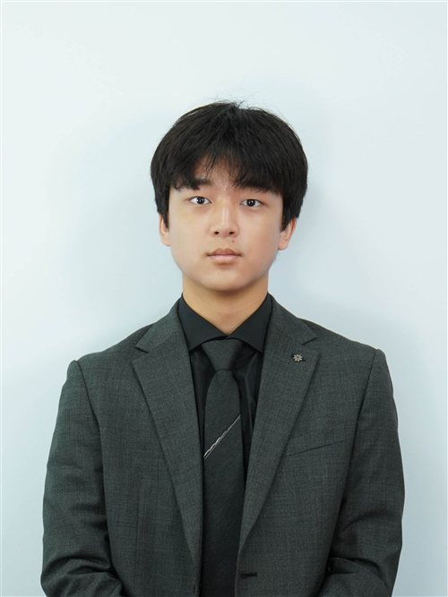

Hello Delegates, my name is Dongwon Seo, and I will be serving as the Head Chair of the Economic and Social Council (ECOSOC) at KISMUN 2026. It is my great pleasure to welcome you to KISMUN 2026.
This conference marks my 14th MUN and probably my last in my MUN career. I am excited to end my journey by serving as your Chair, and I am delighted to share this final conference with all of you. I hope a memorable experience for every delegate. Remember: Voice your Value, Value your Voice.
To make this conference memorable I strongly encourage you to read the Chair report carefully before attending the Conference. It contains the essential background information and key solutions to understand the topics and prepare for the debate and resolution writing. I also highly recommend participating in the workshops that will be held 3 or 4 weeks before KISMUN 2026, since a large portion of the resolution will be written during these sessions.
If you have any questions regarding the conference, the committee, or the topic, please do not hesitate to contact me at tuna080046@gmail.com. Once again, Welcome to KISMUN 2026 and I will be looking forward to meeting you all and witness tense debates, creative clauses. MEET YOU AT KISMUN 2026!
With my most cordial welcome,
Dongwon Seo
Head Chair of the Economic and Social Council
KISMUN 2026

Honorable chairs, esteemed delegates, fellow staff and respected directors, my name is Siwon Jin and it is my absolute honor to serve as your Deputy Chair for ECOSOC.
"Start where you are, Use what you have, Do what you can".
This quote is for my fellow delegates, especially for those having their very first conference, concerned and frightened about it.
To provide some advice, MUN is not about perfection. It is about communicating, building relationships and most importantly having fun while addressing global issues. And always remember that every experienced delegate or even I once sat right where you are in KISMUN 2026. So throughout this conference, don't hesitate to raise your placards, test your ideas and learn from others because KISMUN 2026 is the place where you value your voice, voice your value. For my duty, I will also bring my best to not only smoothly run the committee but also foster a comfortable environment for everyone.
Sincerely,
Siwon Jin
Deputy Chair of the United Nations Economic and Social Council
KISMUN 2026